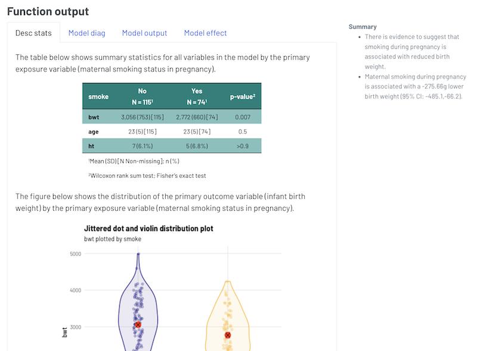
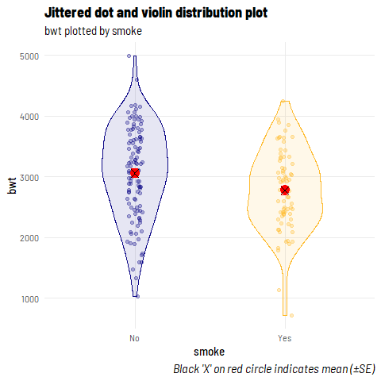
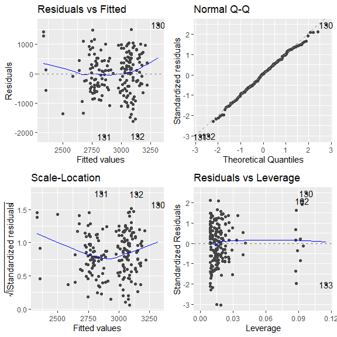
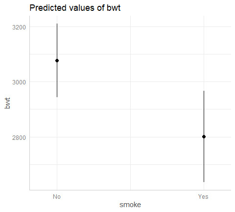

We are constantly working on the appearance of the reports we generate for our colleagues and collaborators. This includes managing .html and .docx output for different use cases, all while navigating the move from R Markdown to Quarto. At this stage, we have all but completely abandoned the idea of rendering directly to .pdf as we find .docx more friendly (tracking changes with collaborators, certain output manipulating functions) and it is readily ‘pdf-able’ - but more on all that in a future post.
Our primary report output format is .html and we have been looking for ways to harness certain Quarto features to improve both the aesthetic of our reports as well as our use of real estate. Often, we are presenting output for a range of models separated by narration. It is important that all models are presented with sufficient context (as opposed to output just dumped on a page) and we’ve settled on what we think is a nice way to ensure relevant information (like model diagnostics) are readily available (and digestable) to the reader, as opposed to being tucked away at the end - or worse - left out altogether.
Below, we present the way we currently present output from a linear regression in our .html reports.

Model Output - Presentation
Presentation overview
We use a combination of tabset panels (implemented with .panel-tabset) and margin content (implemented with .column-margin) to achieve what we think is a nice balance between real estate utilisation and content compartmentalisation.
Data for the demonstration
To demonstrate, we will use a slightly modified dataset of Birth Weight data (read more with ?MASS::birthwt) from the MASS package (MASS::birthwt).
The dataset has 189 observations (rows) and in the code below we just tidy up some variables prior to running the model.
Code
dat_bwt <- MASS::birthwtdat_bwt <- dat_bwt %>%tibble() %>%mutate(smoke =factor(case_when(smoke ==1~"Yes", smoke ==0~"No", T ~NA_character_)),ht =factor(case_when(ht ==1~"Yes", ht ==0~"No", T ~NA_character_)))
We then implement the following linear regression (lm) model:
Outcome: infant birth weight (bwt).
Exposure of interest: maternal smoking status during pregnancy (smoke).
Covariates: maternal age (age) and history of hypertension (ht).
Demonstration
Running the function
We can run our function using the code below:
mod_bwt <- dat_bwt %>%thekids_model(y ="bwt", x ="smoke", formula ="age + ht")
In this, we have passed (piped) the data into the first argument, specified the outcome variable in the next argument, the exposure of interest in the next argument, and finally the remainder of the models formula (that is, the covariates we are looking to have in our model).
Alternatively, we could run our model in the ‘normal’ way and pass it to our output processing function - which is really the workhorse of the above function - and this would look something like the following:
my_model <-lm(bwt ~ smoke + age + ht, data = dat_bwt)thekids_model_output(my_model, by ="smoke") # still need to specify our exposure of interest
The objects defined above (mod_bwt, my_model) are lists that contain outputs relating to our selected model type.
Now, we see how the output would appear in an .html report.
The table below shows summary statistics for all variables in the model by the primary exposure variable (maternal smoking status in pregnancy).
smoke
No N = 1151
Yes N = 741
p-value2
bwt
3,056 (753) [115]
2,772 (660) [74]
0.007
age
23 (5) [115]
23 (5) [74]
0.5
ht
7 (6.1%)
5 (6.8%)
>0.9
1Mean (SD) [N Non-missing]; n (%)
2Wilcoxon rank sum test; Fisher's exact test
The figure below shows the distribution of the primary outcome variable (infant birth weight) by the primary exposure variable (maternal smoking status in pregnancy).

The four panel plot below shows diagnostic plots that can aid in determining if the required assumptions of model are met.
Based on the below, the model fit is deemed to be good.

Broadly, what we are looking for (and why) in these plots are:
(top-left) relatively even bands of points around a flat line at 0 as we move from left to right | linear relationship check,
(top right) the points to fall close to the diagonal line | normal distribution of errors check,
(bottom-right) the points to funnel close to 0 as we move from left to right with no extreme values in the top right or bottom right corners | influential observations check, and
(bottom-left) checking residuals are relatively evenly spread across the range of predictions | homoscedasticity check.
The table below shows the model output for the linear regression model, including the beta coefficient (and 95% confidence interval) and p-value associated with each variable in the model.
Characteristic
Beta
p-value
(Intercept)
2,824.1 (2,351.4, 3,296.7)
0.000
smoke
No
—
Yes
-275.7 (-485.1, -66.2)
0.010
age
11.0 (-8.4, 30.3)
0.264
ht
No
—
Yes
-424.2 (-843.0, -5.4)
0.047
The figure and table below show the predicted value (also known as the estimated marginal mean) for the outcome variable (infant birth weight) for each level of the exposure of interest (here, no maternal smoking in pregnancy or maternal smoking in pregnancy), along with a 95% confidence interval. Note, see table footnote for the values used for the other variables in the model.

Predicted values of bwt
smoke
Predicted
95% CI
Adjusted for: age = 23.00, ht = No
No
3076.84
2943.20, 3210.47
Yes
2801.18
2635.57, 2966.79
Summary
There is evidence to suggest that smoking during pregnancy is associated with reduced birth weight.
Maternal smoking during pregnancy is associated with a -275.66g lower birth weight (95% CI: -485.1,-66.2).
The code to generate this can be viewed below:
Code
# ::: panel-tabset# ## Desc stats# # The table below shows summary statistics for all variables in the model by the primary exposure variable (maternal smoking status in pregnancy).# # ```{r}# mod_bwt$mod_desc %>% # thekids_table(colour = "DarkTeal",# padding.left = 10, padding.right = 10)# ```# # The figure below shows the distribution of the primary outcome variable (infant birth weight) by the primary exposure variable (maternal smoking status in pregnancy).# # ```{r fig.height=5, fig.width=5, fig.align='center'}# mod_bwt$mod_desc_plot# ```# # ## Model diag# # The four panel plot below shows diagnostic plots that can aid in determining if the required assumptions of model are met.# # **Based on the below,** the model fit is deemed to be good. # # ```{r fig.height=6, fig.width=6, fig.align='center'}# mod_bwt$mod_diag# ```# # Broadly, what we are looking for (and why) in these plots are: # # + *(top-left)* relatively even bands of points around a flat line at 0 as we move from left to right | linear relationship check, # + *(top right)* the points to fall close to the diagonal line | normal distribution of errors check, # + *(bottom-right)* the points to funnel close to 0 as we move from left to right with no extreme values in the top right or bottom right corners | influential observations check, and # + *(bottom-left)* checking residuals are relatively evenly spread across the range of predictions | homoscedasticity check.# # ## Model output# # The table below shows the model output for the linear regression model, including the beta coefficient (and 95% confidence interval) and p-value associated with each variable in the model.# # ```{r}# mod_bwt$mod_output %>% # thekids_table(colour = "DarkTeal",# padding.left = 10, padding.right = 10)# ```# # ## Model effect# # The figure and table below show the predicted value (also known as the estimated marginal mean) for the outcome variable (infant birth weight) for each level of the exposure of interest (here, no maternal smoking in pregnancy or maternal smoking in pregnancy), along with a 95% confidence interval. Note, see table footnote for the values used for the other variables in the model.# # ```{r fig.height=4.5, fig.width=5, fig.align='center'}# mod_bwt$mod %>% # ggeffects::predict_response("smoke") %>% # plot# ```# # ```{r}# mod_bwt$mod %>% # ggeffects::predict_response("smoke") %>% # ggeffects::print_html()# ```# :::# # ::: column-margin# **Summary**# # + There is evidence to suggest that smoking during pregnancy is associated with reduced birth weight.# + Maternal smoking during pregnancy is associated with a `r round(coef(mod_bwt$mod)[2],2)`g lower birth weight (95% CI: `r round(confint(mod_bwt$mod)[2,1],1)`,`r round(confint(mod_bwt$mod)[2,2],1)`).# :::
If you copy all this code, you can then select all, and use ctrl+C (or command+c) to uncomment the code.
Pros and cons
The motivation behind this was really to reduce the length of code in our Quarto reports and to reduce the scroll in our rendered .html reports, without having to hideaway important information (like diagnostics) in a supplementary report, along with forcing (is that too strong?) the reader to engage with the raw data (and it’s distribution) a little before just seeing the model output.
We acknowledge this is still a work in progress.
Pros
Concise code and concise report output
Maintain ready access to the model and the data (for additional processing, if required)
Reduce indecision (ad nauseam) over how to format your model output (which package(s) to use)
Cons
Multiple copies of the dataset are created, which will be problematic with large data
Limited functionality as it relates to different (more complex) model types
Yet another function to learn and engage with
Our view, again as it speaks to the motivation here, is that we often run these sorts of models - which may not even be our final model - but may be informative on the pathway to specifying the final model. And, along the way, there is a lot value in having all of this output structured and readily available.
Accessing the function
The above two functions (thekids_model and thekids_model_output) are now available in our package thekidsbiostats, which you can install by running the following code:
The help documentation (?thekids_model) is there to walk you through the relevant arguments.
Next steps
In line with some of the thoughts in this previous post, we are only in the early stages of turning this code into a truly generic function. We have, for some time, been using modified ‘project specific’ versions of this function (or a version of this function - often with marginal effect estimates embedded). However, as noted, this wrapper function only currently works with basic linear regression models.
We have plans to add (at least) the following functionalities:
The handling of logistic regression, negative binomial regression, and quantile regression models,
The handling of multiple models at the same time (for example two models with different sets of covariates),
The passing of additional arguments through to the functions used within our functions (e.g., exp = T), and
Increased (and automated) narration (of the output).
Closing comments
The thekids_model function marks a step forward (at least for us) in streamlining how we present model output, improving both code efficiency and report clarity. By balancing aesthetics with accessibility, we aim to make diagnostic checks and key outputs seamlessly available without overwhelming the reader. While there’s still room to expand the functions functionality, we believe our approach provides a solid foundation to build upon (without overreaching).
We’d love to hear your thoughts or suggestions on how we could refine this function further.
Acknowledgements
Thanks to Zac Dempsey and Dr Elizabeth McKinnon for providing feedback on and reviewing this post.
Reproducibility Information
To access the .qmd (Quarto markdown) files as well as any R scripts or data that was used in this post, please visit our GitHub: